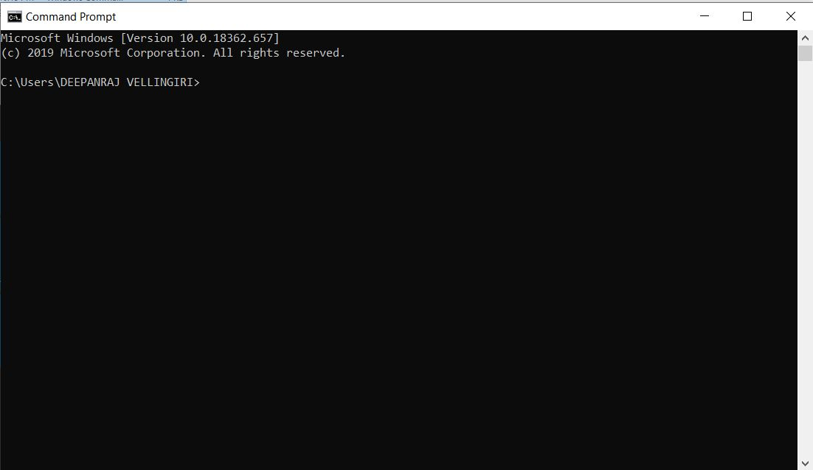
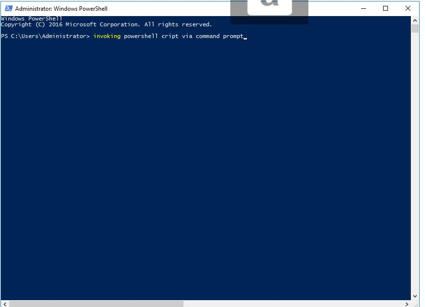

cmd is nothing but a cli used to execute most of the task which makes ease of action also called as a terminal execution
SCRIPTING VIA COMMAND PROMPT
In some cases due to powershell compatibility issue (lower version) we can't automate the scripts in such cases we can execute the same fuctionality via command prompt not all action executable cmd lags in managing the registry to WMI (Windows Management Instrumentation) can be exposed only via powershell cmdlets.
WHAT IS COMMAND PROMPT?

CMD FLIE
CMD file is a script file that contains one or more commands in plain text format that are executed in order to perform various tasks via CLI. It is similar to a .BAT file, which is also commonly used to store a batch of executable commands
CMD as malware file.
Yes, cmd can be used for malware functionality, which stores lot of executable commands lets take a scenario what happens if large executable file opened out for 100 times in a single shot leads to hang and OS crash. never double-click a CMD file you have downloaded or received via an email attachment or in any site unless you can verify the legitimacy of the source just open in a text editor and verify first.
Disadvantages
normally any services can be stop/start/disable in service.msc (manually) also via powershell script (automation) same can be done in command prompt (automation) using net and sc utilities but cmd lags in managing the registry to WMI (Windows Management Instrumentation) can be exposed only via powershell cmdlets.

Stop services via command prompt
1-show Running services command- sc queryex type=service which shows all the running active services.
2-command to stop services- net stop (service)this command used to stop services.
3-open the text editor list all the services which needs to be stopped out and save the file in extension type- .CMD format
4-fetch the file location from -CMD run the file, you can check out the services it should be in stop state.
5-Check out the -video for ease understanding

Start services via command prompt
1-show stopped services command- sc queryex type=service state=inactive which shows all the stop services.
2-command to start services- net start (service)this command used to start services.
3-open the text editor list all the services which needs to be started out and save the file in extension type- .CMD format
4-fetch the file location from -CMD run the file, you can check out the services it should be in start state.
5-Check out the -video for ease understanding

Invoking a PowerShell script via cmd.exe
Yes, we can run powershell script via command prompt all the shell scripts are executable in the format .ps1,create a PowerShell script in the PowerShell ISE, or in any text editor includes Notepad.Make sure to save the script with the extension .ps1
Execution-fetch the path of the file location then copy paste location in a notepad and infront of it include this command powershell (example-powershell -command "C:\technoids\start.ps1")
Reference command will be like this - powershell -command "C:\technoids\start.ps1"
Run the command it should execute sucessfully, check out the video for keen view.
NoCopyright © reserved | TEST SITE is made with by DEEPANTECHNOID